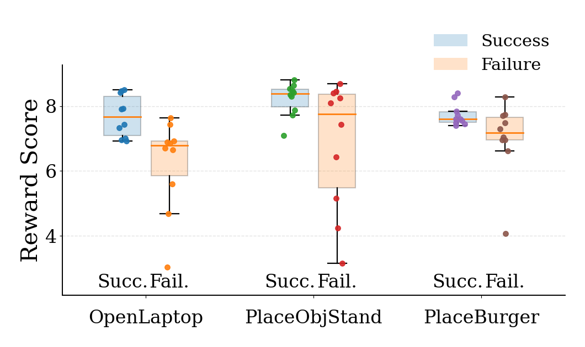
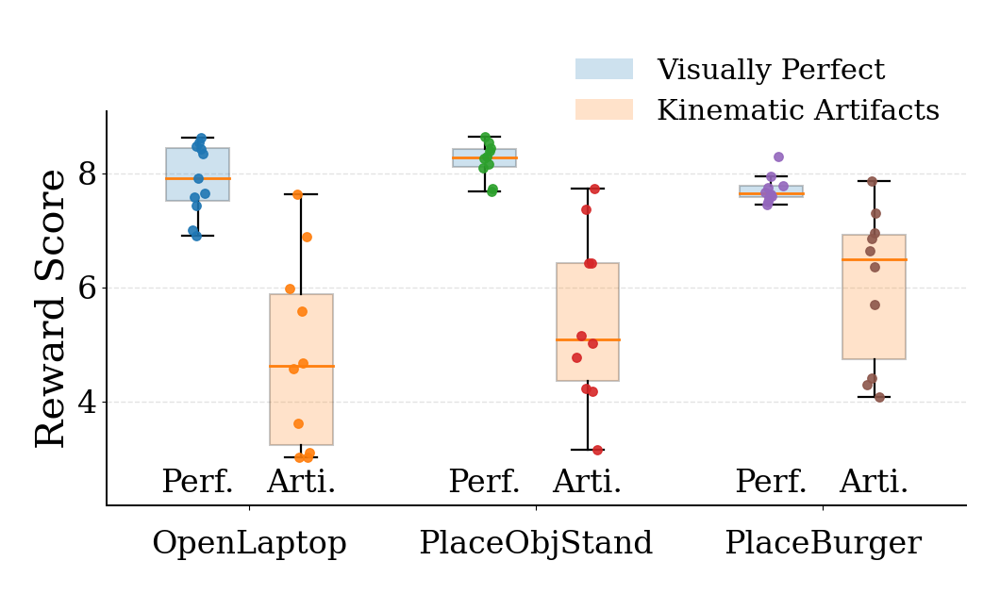

Plush Toy Placement
Real-robot execution on the plush toy task.
1 The Chinese University of Hong Kong, Shenzhen
2 DexForce Technology Co., Ltd.
†Corresponding author
TL;DR: EVA bridges the executability gap by aligning video generation with embodiment-aware action rewards, leading to more executable visual plans and better real-world control.
Video generative models are increasingly used as world models for robotics, where a model generates a future visual rollout conditioned on the current observation and task instruction, and an inverse dynamics model (IDM) converts the generated frames into executable robot actions. However, current video world models lack explicit executability constraints. As a result, visually coherent rollouts may still violate rigid-body and kinematic consistency, producing unstable or infeasible control commands when decoded by an IDM. We refer to this mismatch between visual generation and physically executable control as the executability gap. While this gap can be mitigated at inference time using techniques such as rejection sampling, such approaches are inefficient due to the high cost of video generation. In this paper, we leverage the executability gap as a training signal and introduce Executable Video Alignment (EVA), a reinforcement-learning post-training framework for aligning video world models. EVA trains an inverse dynamics model on real robot trajectories and repurposes it as a reward model that evaluates generated videos through the action sequences they induce, encouraging smooth motions measured by velocity, acceleration, and jerk while penalizing actions that violate embodiment constraints. Importantly, the reward remains informative even when generated videos contain severe visual artifacts, since such artifacts typically translate into unstable or out-of-bound actions. Experiments on the RoboTwin benchmark and a real bimanual robot show that EVA reduces embodiment-specific artifacts in generated rollouts and improves downstream task execution success.
Given an observation and task description, We generated video plans of how the robot would perform the task.
We can generate richer initial observations, which in turn enable the generation of more diverse novel task rollouts.
Real-robot execution on the plush toy task.
Real-world pouring result with stable long-horizon control.
EVA uses the inverse-dynamics reward as a dense alignment signal during post-training. The resulting reward is not only predictive of downstream execution success, but also correlates with visually cleaner and more physically consistent robot rollouts. The plots below summarize these two trends on our evaluation set.

